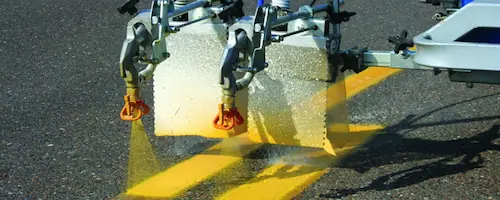
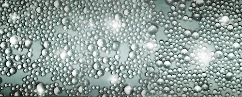
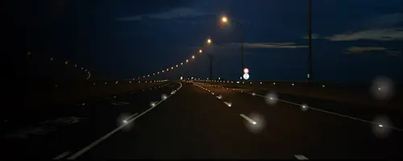
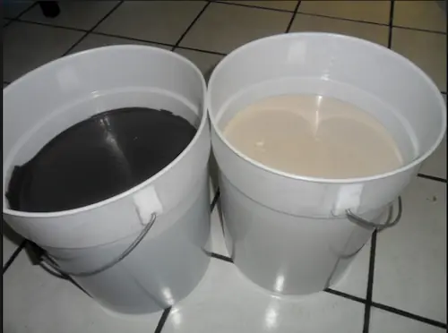

Pintura de Tránsito
Contamos con pintura de tránsito de alta calidad para el señalamiento horizontal bajo cumplimiento de la SCT. Además, fabricamos pintura termoplástica que es ecológica y de alta duración, sustituyendo las pinturas tradicionales a base de solventes. Esta pintura termoplástica no contamina el ambiente y está libre de solventes. Su duración es de mínimo 3 años.
Pintura de Tránsito - PT
Tenemos pintura base agua y termoplástica para el marcaje horizontal de autopistas, carreteras, vialidades primarias, secundarias y aeropuertos.
Base Solvente BSA1
Tiene una duración de vida de 8 meses. Pintura de tráfico de secado rápido, base solvente para demarcación o señalamiento de carreteras, calles, estacionamientos, cruces viales y símbolos. Se puede aplicar sobre pavimentos de concreto y asfalto.
Base Solvente BSA2 - BSA2
Tiene un tiempo de vida de 12 meses. Pintura de tráfico de secado rápido, base solvente para demarcación o señalamiento de carreteras, calles, estacionamientos, cruces viales y símbolos. Se puede aplicar sobre pavimentos de concreto y asfalto.
Base Agua BA1
Tiene una duración de 8 meses. Es mas ecológica. Resistencia a la acción abrasiva del tráfico intenso sin deteriorarse, ni decolorarse, secado rápido, alta visibilidad, larga duración, fácil aplicación, no contiene plomo.
Colores: Blanco y Amarillo
Aplicación: Brocha, rodillo y equipo de aspersión al rendimiento especificado.
Base Agua BA2
Tiene más tiempo de vida, unos 12 meses y es más ecológica que la solvente. Resistencia a la acción abrasiva del tráfico intenso sin deteriorarse, ni decolorarse, secado rápido, alta visibilidad, larga duración, fácil aplicación, no contiene plomo.
Colores: Blanco y Amarillo
Aplicación: Brocha, rodillo y equipo de aspersión al rendimiento especificado.
Base Agua para Aeropuertos
Para aeropuertos se puede utilizar base agua o base solvente. La termoplástica esta prohibida en este tipo de vía. resistencia a la acción abrasiva del tráfico intenso sin deteriorarse, ni decolorarse, secado rápido, alta visibilidad, larga duración, fácil aplicación, no contiene plomo.
Colores: Blanco y Amarillo
Aplicación: Brocha, rodillo y equipo de aspersión al rendimiento especificado.
Termoplática Ribbon
Es un producto especial para la demarcación de calles y carreteras que tengan un alto volumen de tránsito. Ofrece una máxima durabilidad, que ningún otro producto en el mercado, esto es porque es posible formar una capa con un alto espesor (hasta 3 mm).
Termoplástica Spray
Es una pintura sólida que al calentarse se vuelve fluida, pudiendo ser aplicada por pulverización o lluvia de spray, lo que facilita su uso y manejo. Es la mejor solución cuando se requiere liberar la vía de manera rápida y evitar cortes de tránsitos extensos en calles y carreteras.
Características: Secado rápido, Buena cubrición, No contiene plomo ni metales pesados, Excelente flexibilidad y adherencia, Alta duración en el exterior
Termoplástica Vibraline
Es utilizada para alertar al conductor que se está saliendo de la vía
Espesor: puede aplicarse desde 2.286mm para ofrecer una banda sonora y visible bajo condiciones adversas de conducción.
Microesferas: posee microesferas y también se le pueden agregar adicionales, estas deben poseen recubrimiento superficial.
Ventajas: bajos niveles de componentes orgánicos volátiles (VOC), libre de plomo, secado rápido, flamabilidad grado 1.
Rendimiento: 4,0 a 5,0 m2 por saco, dependiendo del tipo de pavimento y la forma de aplicación.
Aplicación: debe ser aplicado a una Temperatura mínima de 224ºC, el sustrato debe estar a mínimo 10ºC y libre al 100% de humedad y sin pronóstico de lluvia durante las siguientes 3 horas. Puede ser aplicado mediante dado o zapata especial que permita el vaciado, en hormigón se requiere imprimación previa.
Tiempo de Secado: entre 2 minutos y 10 minutos, dependiendo de la Temperatura del sustrato.
Norma: manual de Carreteras Volumen Nº6, Seguridad Vial, 2013
Uso: recomendada para ser aplicada en vialidad, señalización de calles, autopistas, bandas laterales, o transversales a la calzada, carreteras, entre otros que pueda pasar alto tráfico de vehículos.

Microesfera, Reflejantes
Aumentamos la seguridad vial de una manera muy económica, además de multiplicar la visibilidad de las marcas viales durante la noche y el día, aumentando la durabilidad de tales señalamientos.
Microesfera - M
Es aplicada al momento de pintar vialidades y es ésta la que permite la retro reflexión de la luz emitida por los vehículos gracias a la cual las líneas y marcas en vialidades son visibles durante la noche.
Microesfera Urbana de Vidrio
Las microesferas de vidrio son un producto usado en la señalización vial de cara a mejorar la visibilidad en las carreteras cuando las condiciones de luminosidad no son suficientes. Las microesferas actúan como pequeños ojos de gato que reflejan la luz en la dirección de la que proviene dando mejor visibilidad a la carretera.
Microesferas Cerámicas
Están diseñados para su uso en caminos y carreteras como parte de marcajes horizontales de líneas longitudinales.

Vialetas, Botones y Boyas
Tenemos boyas, botones y vialetas las cuales se utilizan para delimitar carriles en autopistas, autovías, zonas urbanas y estacionamientos y reducir la velocidad de los vehículos.
Supervialetas - S
Tiene dimensiones mayores a la Vialeta ordinaria y se utiliza regularmente para delimitar carriles laterales.
Botones - OD-7
Se usan para complementar las marcas sobre el pavimento, su estructura deberá ser lisa de color blanco o amarillo y se fijarán por medio de anclas o adhesivos, no debiendo sobresalir más de 2 cm. del nivel del pavimento.
Boya de Plástico
Usos: delinear isletas, delinear carriles exclusivos, delinear entronques, delinear glorietas, delinear ciclovías, retención de límite sobre cajón de estacionamiento, reductor de velocidad.
Boya Metálica
Sirven para delimitar el tráfico o también se utilizan como topes reductores de velocidad, son de color amarillo tráfico y usualmente se les coloca reflejante grado ingeniería o alta intensidad para aumentar su visibilidad, se fijan con clavos especiales para boya.
Vialetas “Tachuelas” - OD-7
Se utilizan para incrementar de manera importante la seguridad en cualquier vialidad o camino transitado por autos y otros vehículos ya que además de ser de alta visibilidad, también son de muy alta resistencia. Fabricado en acero o plástico. Bajo punto de impacto y alta resistencia al tráfico pesado Ideal para señalar zonas peatonales, cruces y vueltas. Contamos con unidireccionales y bidireccionales.
Vialetas de Leds
Son muchos los beneficios de la luz LED de alta potencia, pueden tener una duración de hasta 100.000 horas, ya que no tienen filamentos, este hecho hace que no se fundan como lo hacen las tradicionales bombillas. Estos dispositivos de estado sólido son muy resistentes a los golpes, todo son ventajas.
Botones Reflejantes
Son dispositivos plásticos, cerámicos o metálicos, que se adhieren a la superficie de rodadura del pavimento o se fijan al cuerpo de las estructuras adyacentes al arroyo vial de las carreteras y vialidades urbanas, y que combinados entre sí y con otros elementos de señalamiento horizontal y vertical, contribuyen a mejorar la visibilidad de la geometría de la carretera o vialidad urbana, cuando prevalezcan condiciones climáticas adversas y durante la noche, así como para transmitir al conductor una señal de alerta mediante vibración y sonido en la aproximación a sitios como son entre otros, plazas de cobro, intersecciones, curvas cerradas, zonas urbanas y zonas con pendiente pronunciada descendente.

Adhesivos
Se utilizan para adherir con eficacia botones, vialetas y boyas al concreto.
Adhesivos - A
Pegamento Epóxico
Pegamento a base de dos componentes Formulado para adherir vialetas a superficies de concreto o asfalto
Pegamento Bituminoso
Anclaje en asfaltos y hormigones, adhesivo de tachas, tachones y otros productos viales, reparaciones de asfaltos, entre otros.

Desbaste y Borrado
Contamos con maquinaria de más alta calidad para desbaste y borrado de pintura vial, señalizaciones, rebajar, sanear pavimentos, hormigones, resinas, impresos, etc.